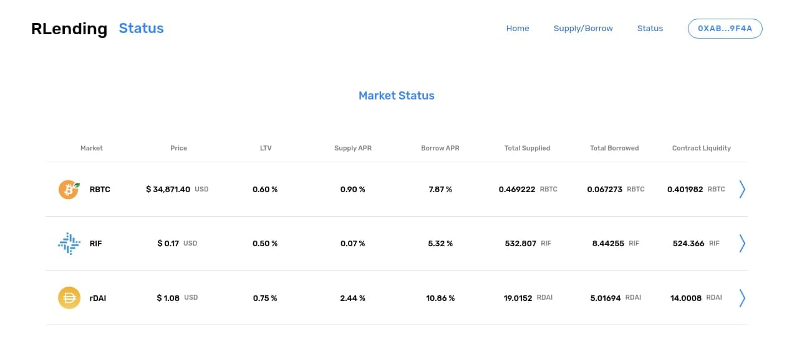

In order to use rLending you will need your Metamask wallet connected to the RSK network Direct your browser towards the rLending website and click Connect Wallet. The screen will let you connect your Metamask wallet.
This will prompt you to choose your account within Metamask. After you have accepted the connection, you will be redirected to the Home Dashboard.
In this screen you will have an overview of the status of your account (Totals supplied, borrowed, available liquidity and health factor)
rLending deposits are easy! After you have connected your Metamask wallet you will be logged in and ready to supply funds.
When you are ready to make a deposit, you will have to click on the Supply / Borrow tab, where you will be able to see the current status of your supplied assets.

If this is the first time supplying, you might see a notice that lets you know how the toggle button works. We will go over it on the next section, in order to Borrow assets.
For now, click on the asset you wish to supply (in this example, we're supplying rBTC).
 At the top of this screen you will find the asset's data, current price and the amount of this token you have supplied converted to USD.
At the top of this screen you will find the asset's data, current price and the amount of this token you have supplied converted to USD.
Select the amount you wish to provide, and then click on Supply Tokens This will promtp your Metamask for validation on the transaction.
After the transaction has been broadcasted you will recieve confirmation and your funds will be credited to your account.

In this last screen we double check the amount we have supplied in Supply Balance. We can also see the current liquidity the contract is holding in Supplied to contract. The Borrow Limit will not show unless the account has provided collateral. We will do this in the next section.
When a user supplies balance they immediately start earning interests, so Congratulations! You are already earning interests!!
All right, when a user supplies balance they immediately start earning interests... but where do those interests come from? Short answer: Borrowers! Those accounts that borrow crypto assets from the rLending protocol pay a varying interest rate every rBTC block. The interest that borrowers pay produces the interest that suppliers earn.
Before you can borrow you need to collateralize your account! An asset that is supplied to the protocol is not usable as collateral initially. In order to inform the protocol that you wish to use an asset as collateral, you must “enter the market” for that asset.
Toggle the Collateral column to enter your supplied funds as collateral
 This will promtp you for confirmation. If you confirm, this will then prompt your Metamask for confirmation, since this is a transaction that requires GAS.
This will promtp you for confirmation. If you confirm, this will then prompt your Metamask for confirmation, since this is a transaction that requires GAS.
If successful, you will receive confirmation and the borrowing warning will dissapear from the background.

An account can enter multiple markets at one time. You can do this by toggling each one you would like to operate with. It is important to notice that in order to borrow from a market, you also need to enter that market, even if your account hasn't supplied balance to that market.
In this example we will be borrowing RIF
If at some point you decide you want to withdraw your funds, you should know you will be reedming your cToken balance in exchange for their respective underlying assets. Withdrawals are accessed through the Supply menu, in the Supply/Borrow page.
First, log in. Then go to the Supply/Borrow market list.

There you will need to select the market that you wish to withdraw from.

After you've chosen the amount you with to withdraw, click Withdraw my tokens and Metamask will prompt you with the transaction.

After the withdrawal has been broadcasted you will recieve confirmation and your funds will be credited to your account.
Note that big withdrawals may considerably reduce your health factor!!
Borrows can be repaid using a function on the respective cToken contract. Once a borrow has been repaid, the account’s collateral can be entirely redeemed or transferred. There are also functions in the cToken contracts to repay a borrow on behalf of another account.
A borrowing account becomes insolvent when the Borrow Balance exceeds the amount allowed by the collateral factor. When an account becomes insolvent, other users can repay a portion of its outstanding borrow in exchange for a portion of its collateral, with a liquidation incentive — currently set at 8\% but subject to change through rLending’s governance system. The liquidation incentive means that liquidators receive the borrower’s collateral at a 8\% discount to market price. Having your account liquidated is bad because you lose some of your collateral.
A user who has negative account liquidity is subject to liquidation by other users of the protocol to return his/her account liquidity back to positive (i.e. above the collateral requirement). When a liquidation occurs, a liquidator may repay some or all of an outstanding borrow on behalf of a borrower and in return receive a discounted amount of collateral held by the borrower; this discount is defined as the liquidation incentive.
A liquidator may close up to a certain fixed percentage (i.e. close factor) of any individual outstanding borrow of the underwater account. Unlike in v1, liquidators must interact with each cToken contract in which they wish to repay a borrow and seize another asset as collateral. When collateral is seized, the liquidator is transferred cTokens, which they may redeem the same as if they had supplied the asset themselves. Users must approve each cToken contract before calling liquidate (i.e. on the borrowed asset which they are repaying), as they are transferring funds into the contract.
Like mentioned earlier, markets represent each asset listed in the rLending Protocol. Every market evolves as supply and demand for an asset changes. This impacts several aspects of the protocol (liquidity, price, indexes, etc). If you want to check the current status of a market, you should go to the Status tab.  Here you will find the market list overview. More detailed information is found by clicking on the right arrow:
Each market has its own Supply interest rate (APR). Interest isn't distributed; instead, simply by holding cTokens, you'll earn interest! cTokens accumulates interest through their exchange rate — over time, each cToken becomes convertible into an increasing amount of it's underlying asset, even while the number of cTokens in your wallet stays the same.
Let’s say you supply 1,000 RIF to the rLending protocol, when the exchange rate is 0.020070; you would receive 49,825.61 cRIF (1,000/0.020070). A few months later, you decide it’s time to withdraw your RIF from the protocol; suppose the exchange rate is now 0.021591: Your 49,825.61 cRIF is now equal to 1,075.78 RIF (49,825.61 0.021591) You could withdraw 1,075.78 RIF, which would redeem all 49,825.61 cRIF. You could also withdraw a portion, such as your original 1,000 RIF, which would redeem 46,315.59 cRIF (keeping *3,510.01 cRIF in your wallet) or you could transfer your cTokens, effectively transferring your balance of underlying asset.
If you send your cTokens to a friend, your rLending balance will decline and your friend's will increase. A cToken transfer will fail if the account has entered that cToken market and the transfer would have put the account into a state of negative liquidity.
Introduction Key Concepts How To Financial Aspects and Math Contracts Oracles Security and Audits